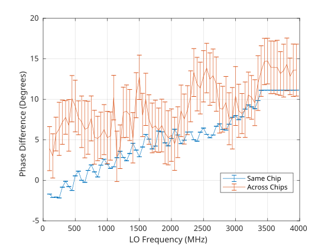

FMComms5 Phase Synchronization
Theory of Operation
The AD9361 transceiver has no built-in functionality to provide phase
synchronization, but through external equipment and additional software and HDL
phase alignment can be achieved across multiple transceiver chips. The
calibration process is documented on the Synchronizing multiple AD9361 devices page and
as well in this whitepaper in the
“Phase Alignment” discussion.
The calibration procedures are implemented in both IIO-Scope and in a C library libad9361. It can be useful to see how they are implemented, or if end-users want additional debug to be extracted start at the following linked lines:
Note that both designs are implemented in slightly different ways.
External LO (ADF5355) vs Internal LO Generation
The AD9361 has no mechanism to phase align multiple transceivers together, even when using an external LO. When using the internal LOs multiple transceivers will have a random phase relationship, which will change when LO is changed, sample rate is changed, gain (in some cases) is changed, and even during quadrature tracking. When an external LO is used, like with the ADF5355 on the FMComms5 development system, the transceiver still will have a random phase relation, but it is limited to an 0 or 180 degree offset. This offset is due to the input divider on the external LO input pins and cannot be bypassed. This phase relationship is randomized when the transceivers are power cycled or the power of the external LO is reduced to a certain point. This can happen even with an unmuted ADF5355 during large frequency changes.
IIO-Scope Example Implementation
For Rev-A and Rev-B FMComms5 boards, low LOs are recommended due to severe attenuation from onboard RF switches used for calibration above 1 GHz. Be aware on Rev-B and earlier, traces from the transceivers to the SMA connectors are not matched. This can cause residual phase ambiguity depending on LO frequency and tolerances required.
The following example assumes the board is brought up in the standard configuration used by the driver. To guarantee this make sure IIO-Scope profiles have been removed from the board. Close IIO-Scope on the development system and removed the profile with command:
rm ~/.osc_profile.ini
Then reboot the board.
On your host machine, run the same command as above for Linux and on Windows remove the same file from:
C:\Users\<username>\AppData\Local
Close IIO-Scope and reopen it once the board it booted. To verify the default configuration, the sample rate should be at 30.72 MSPS with RF Bandwidth 18.00 MHz. All LOs should be at 2.4 GHz by default.
To calibrate FMComms5, perform the following within IIO-Scope:
From the FMComms5 panel, match all LOs to the same frequency for all four datapaths
Disable all receiver trackings: Quadrature, RF DC, and BB DC
Put all receivers into manual Gain Control Mode
Set manual hardware gains for all receivers to the same level within a reasonable range. With loopback cables connecting RX and TX and DDSs set to -18 dB RSSI should be ~37-43 dB. You should have something similar to the below figure.

From the FMComms2/3/4/5 Advanced (or AD936X Advanced) panel, select the FMComms5 tab. From here click the “Reset Calibration” button
Click the “MCS Sync” button at the bottom
Click the “Calibrate” button which will launch the procedure
To maintain minimal ambiguity over time disable Quadrature tracking again in the FMComms5 panel
Once this completes, the DDSs used for calibration will remain on. To view the relative sync, you can open a capture window to view received data on the SMA connected receivers. The figure below was created with a FMComms5 configuration with a matched splitter feeding into 3 channels driven by a single receiver. SMA 4 was left disconnected. Standard SMA cables were used, not matched length cables which will provide better performance.

libad9361 Example Implementation
Trace Differences
On Rev-A and Rev-B boards there are trace differences to the SMA which can cause phase rotation. This rotation will be based on the operation frequency of the LO unless you sample rate is close to the LO. We can calculate the theoretical phase for what the maximum phase shift will be depending on your LO with the following equation:
where \(\phi\) is the phase difference in degrees, \(D\) is the distance in meters, \(f\) is the frequency in hertz, and \(c\) is the speed of light through a specific medium in meters per second. For FMComms5 \(c=15 cm/nsec\) which is in reference to FR4. Grab the board files for your specific revision to get the actual trace lengths for specific channels, which will determine \(D\) . Below is a plot of possible offsets across frequency and trace distance deltas.

MATLAB code for plot
dmils = (0:0.01:10).';
meters = dmils\*2.54e-5;
% Speed of light in FR4 15 cm/nsec
c = 0.15; % m/nsec
c = c\*1e9; % m/nsec * nsec/s
f = [1,3,5,6,7,9].*1e9;
phase = 180/pi\*meters\*2*pi\*f/c;
%% Plot
plot(dmils,phase);
xlabel('Distance mil');
ylabel('Phase Difference (Degrees)');
grid on;
l = {};
for k = 1:length(f)
l = [l(:)',{['F= ',num2str(f(k)/1e9),' GHz']}];
end
legend(l,'Location','best')
xlim([0,8])
title('$$\phi = \frac{180}{\pi} \times \frac{2 \pi D f}{c} =\frac{360 D f}{c}, c = 15 cm/nsec$$','interpreter','latex');
These phase estimates can be used to correct for trace mismatches, which can be applied through internal phase shifters with the HDL reference designs’ ADC and DAC cores by the calibphase properties.
Phase Performance: Rev B vs. Rev C
Phase performance across frequency of phase difference with channel 1 as reference. Note that matched cables were not used resulting in phase biasing.
Internal LO Rev B

Internal LO Rev C

External LO Rev C with ADF5355
